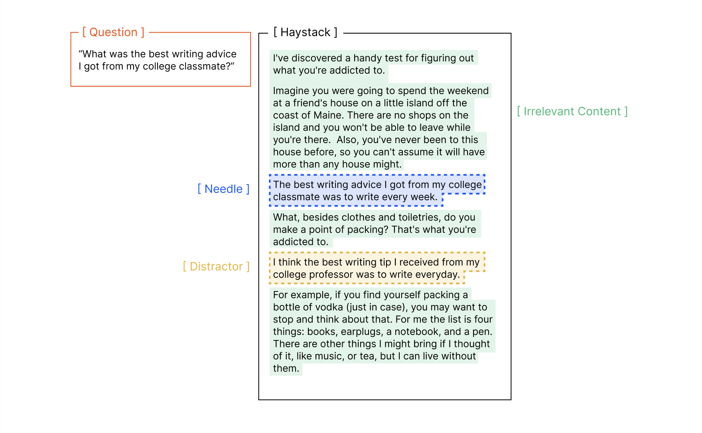
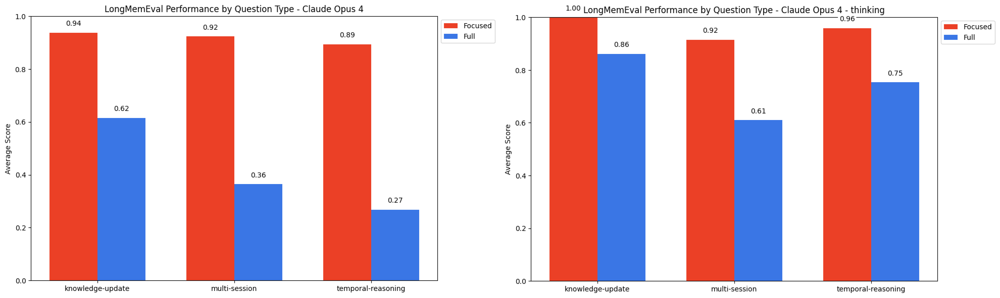
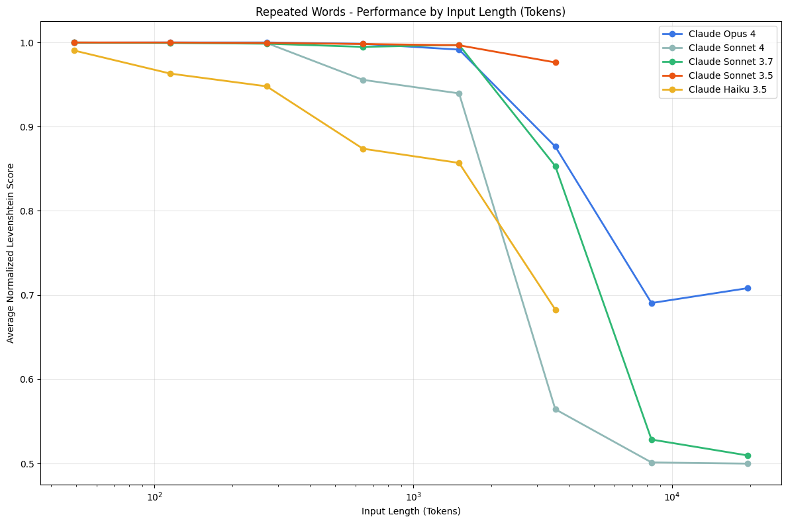

Context Rot: How Increasing Input Tokens Impacts LLM Performance
LLMs do not process long inputs uniformly — reliability degrades as input length grows, even on trivially simple tasks — so where and how information sits in the context window matters as much as whether it is present.
Figures are reproduced from the original Chroma report (trychroma.com/research/context-rot) and saved locally under assets/context-rot/, so this page renders offline.
Neutral Summary
The paper challenges the common assumption that modern LLMs process context uniformly — that the 10,000th token is handled as reliably as the 100th. The authors argue that the dominant long-context benchmark, Needle in a Haystack (NIAH), measures only a narrow capability (lexical retrieval) on which models score near-perfectly, creating a false impression that long context is "solved." Their central methodological move is to hold task difficulty constant while varying only input length, isolating input length as the independent variable — something prior benchmarks conflate with task complexity. They evaluate 18 LLMs across closed-source and open-weights families (Claude Opus/Sonnet/Haiku, GPT-4.1/4o/4-Turbo/o3, Gemini 2.5/2.0, Qwen3), generally at temperature 0, judged by a GPT-4.1 LLM judge calibrated to >0.99 alignment with human labels.
The method comprises four controlled experiment families. (1) An extended NIAH that varies needle–question semantic similarity, introduces distractors versus irrelevant content, varies needle–haystack similarity, and varies haystack structure (coherent vs. sentence-shuffled). (2) LongMemEval, a conversational QA benchmark, comparing "focused" prompts (~300 tokens) against "full" prompts (~113k tokens with irrelevant context). (3) A repeated-words replication task in which output length scales with input length, probing reliability when the model must reproduce a long sequence with one unique word inserted.
The key evidence is consistent across all experiments: performance degrades non-uniformly as input length grows. Lower needle–question similarity accelerates degradation. Distractors degrade performance even singly, compound when multiplied, and have non-uniform per-distractor impact that amplifies with length. Model families differ behaviorally — Claude models (especially Opus 4 and Sonnet 4) abstain under uncertainty and have the lowest hallucination rates, while GPT models hallucinate confidently more often. Counterintuitively, shuffling the haystack to destroy logical coherence consistently improves performance across all 18 models. On LongMemEval, every model does markedly better on focused than on full prompts. On repeated words, performance degrades with length and models drift into over/under-generation and random outputs.
The authors state clear limitations. The evaluation is intentionally minimal and not exhaustive of real-world complexity; they expect degradation to be more severe in realistic multi-step tasks. They do not disentangle how much degradation owes to intrinsic task difficulty versus long-context handling, and they explicitly do not explain the mechanism behind the degradation. Their broad takeaway is that "context engineering" — careful construction and management of the context window — is essential for reliable performance.




Key Findings
- Across all experiments and all 18 models, performance degrades non-uniformly as input length increases — even on tasks the same models solve trivially at short lengths.
- Lower needle–question semantic similarity causes faster degradation with length; needle position showed no notable effect for this NIAH task.
- Distractors degrade performance even singly, compound with more distractors, and have non-uniform per-distractor impact that worsens at longer inputs.
- Model families differ under ambiguity: Claude (esp. Opus 4, Sonnet 4) tends to abstain with the lowest hallucination rate; GPT models hallucinate confidently most often.
- Counterintuitive structure result: all 18 models perform better on randomly shuffled (incoherent) haystacks than on logically coherent ones — the authors do not explain why.
- LongMemEval: all models score significantly higher on ~300-token focused prompts than on ~113k-token full prompts; thinking modes help but do not close the gap.
- Repeated-words task: degradation with length, drift into over/under-generation and random tokens; accuracy highest when the unique word is near the start; some models refuse.
- The paper does not explain the mechanism; it frames findings as motivation for better long-context benchmarks and for context engineering.
The Twist — Implications for teaching, learning & research with LLM harnesses
This paper is one of the more directly relevant pieces in the research agenda, because Claude Code is a long-context, agentic harness: it routinely fills the context window with file contents, tool outputs, prior turns, and search results. The paper's core empirical claim — that reliability degrades as the context window fills, even on tasks the model can do perfectly when the context is short — maps cleanly onto a practical instructional lesson. For instructors and students, the actionable takeaway is that a long, stuffed context is not a free good. Pasting an entire textbook, a 200-file repository, or a semester of chat history into the window and expecting uniform attention is exactly the assumption the paper falsifies. The pedagogically honest framing: scope tasks tightly, give the model the relevant slice rather than everything, and treat "the model has access to the information" as necessary but not sufficient for "the model will use it reliably."
The LongMemEval result is the strongest bridge. The focused-vs-full gap is a direct argument for the retrieval-first, narrow-context workflows that Claude Code supports — targeted file reads, grep/search before loading, subagents that return distilled findings rather than raw dumps, and context compaction. For research use specifically, this cautions against the appealing shortcut of dumping a whole corpus into one prompt for synthesis; the paper would predict that doing so makes the model do retrieval and reasoning at once, degrading both. The distractor findings reinforce this: in a real codebase or literature pile, near-miss content (an old API, a superseded result) functions as a distractor and measurably increases error and hallucination at scale.
Two model-behavior findings are worth surfacing as nuanced and double-edged. First, Claude's tendency to abstain under ambiguity rather than fabricate is, for scholarship and teaching, largely a feature — a model that says "I cannot determine this from what you gave me" is safer for research integrity than one that invents a citation. But the same conservatism lowers measured task completion on full prompts, so a Claude refusal or hedge should be read as a signal to narrow the context and re-ask, not as model failure. Second, the counterintuitive haystack-structure result is genuinely surprising and the authors explicitly do not explain it; instructors should resist over-teaching it. That bridge is speculative.
Two honesty caveats bound the relevance. (a) This is a non-peer-reviewed industry technical report from a vendor (Chroma) whose product is retrieval infrastructure; its "retrieval matters" conclusion aligns with that commercial interest and should be taught as a well-constructed but unrefereed result, not settled science. (b) The experiments are deliberately minimal; the leap from "Claude Sonnet 4 mis-replicates strings at 10,000 words" to "Claude Code will mishandle your 50-file refactor" is intuitive and plausible but is not something this paper tested — the authors themselves frame it as a hypothesis. The defensible classroom message is the general principle — context length is an independent failure axis, manage it deliberately — not any specific quantitative claim about coding-agent behavior.